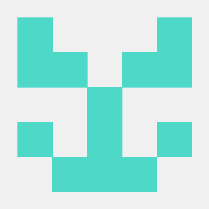

Skip to content
This repository
Pull requests
Issues
Gist
New repository
New organization
This repository
New issue
New collaborator

Signed in as
stkromm
Your profile
Your stars
Explore
Integrations
Help
Settings
Sign out
Unwatch
1
Notifications
Not watching
Be notified when participating or @mentioned.
Watch
Watching
Be notified of all conversations.
Unwatch
Ignoring
Never be notified.
Stop ignoring
Unstar
0
Star
0
Fork
Where should we fork this repository?
0
stkromm
/
sparkling-scala
Code
Issues
0
Pull requests
0
Wiki
Pulse
Graphs
Settings
No description or website provided.
—
Edit
Description
Website
Save
or
Cancel
9
commits
1
branch
0
releases
1
contributor
JavaScript
81.0%
Scala
9.0%
XSLT
7.1%
CSS
2.8%
Groff
0.1%
Shell
0.0%
JavaScript
Scala
XSLT
CSS
Groff
Shell
New file
Find file
HTTPS
Choose a clone URL
HTTPS (recommended)
Clone with Git or checkout with SVN using the repository's web address.
HTTPS
SSH
Clone with an SSH key and passphrase from your GitHub settings.
SSH
Learn more about clone URLs
Download ZIP
Branch:
master
Switch branches/tags
Branches
Tags
master
Create branch:
from ‘master’
Nothing to show
New pull request
Latest commit
a4e7898
4 minutes ago
stkromm
added visual paradigm project
Permalink
Failed to load latest commit information.
doc
added visual paradigm project
4 minutes ago
lib
Added Lwjgl libs
3 days ago
scala_ide_workspace
added visual paradigm project
4 minutes ago
scripts
Added recursiv game-loop prototype and frame stats monitoring[D[D[D[D…
a day ago
README.md
first commit
4 days ago
Add a README
Help people interested in this repository understand your project by adding a README.
Something went wrong with that request. Please try again.
You signed in with another tab or window.
Reload
to refresh your session.
You signed out in another tab or window.
Reload
to refresh your session.
Saturday, November 21, 2015
0
clones
0
unique cloners
Friday, November 20, 2015
0
views
0
unique visitors